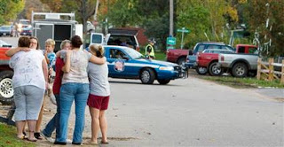

Aftermath in Crandon, Wisconsin: The police arrive to draw the chalk outlines following a lethal rampage by one of their own that killed six young people and left another critically wounded.
Seven young people, all of them legal minors, were victims of firearms violence on Sunday morning in the hamlet of Crandon, Wisconsin. Six were killed immediately, the seventh critically wounded. All of them were unarmed: What the federal government is pleased to call the "law" forbids American citizens younger than 21 to purchase and carry a sidearm.
The assailant, Tyler Peterson, was also a a legal minor. However, he was a full-time sheriff's deputy and part-time police officer. Since he had been deemed "good enough for government work" and spent his working hours in a State-issued costume, he had ready access to an AR-15 rifle (the non-military version of the M-16).
Apparently angry with an estranged girlfriend (who was among the victims) and provoked by something that happened during a "video and pizza party," Peterson, who was off duty, left the gathering briefly, returned with his rifle, and sprayed thirty rounds at his victims. Peterson fled the scene, only to be killed by an individual identified by Crandon Mayor Gary Bradley as a “sniper.”

Keith Van Cleve, Sheriff of Wisconsin's Forest County, coyly refused to confirm that the sniper who killed Peterson was a police officer.
It would be heartening to learn that the sniper who brought down the mass murderer was a civilian, perhaps a public-spirited resident of northern Wisconsin who put his hunting rifle to its optimal use: After all, the entire point of the Second Amendment is to ensure that law-abiding citizens have the means to kill agents of the State who attack or threaten the innocent. It's more likely, of course, that Peterson was killed by another law enforcement officer, long after he'd dispatched his victims to eternity.
David Franz, who lives near the duplex where the massacre took place, summarized the community's reaction to Deputy Peterson's rampage: “How did he get through the system?”
A better question would be: Why would we assume that “the system” would winnow out people capable of murderous outbursts of violence? And yet a better question would be: Why do people persist in the assumption that there is something about government "service" that purifies those authorized to exercise lethal violence on behalf of the State?
The combination of increased federal police spending, militarization of law enforcement at all levels, and relaxed standards for police recruits has created an environment of virtual police impunity, at least for lethal violence committed on duty. While I pray that Tyler Peterson is the rarest of anomalies, it seems ingenuous to believe this is the case.
In August 2006, an off-duty Salt Lake City police officer named Marcus Barrett threatened a 21-year-old Balkan refugee with a gun following a shoving match at a YMCA basketball game. And one wonders what kind of off-duty amusements are favored by David B. Thompson, the degenerate sheriff's deputy in Multhomah County, Oregon who rhapsodized about the sensual thrill of Tazing and "pulling the trigger" on suspects.
Descriptions of Tyler Peterson by those who knew him emphasize that he seemed to be utterly "normal," "average," and disinclined toward murderous violence. The handsome, clean-cut young man we see in his photograph certainly doesn't appear to be capable of killing six of his peers -- including former schoolmates -- in a moment of complete derangement. But he did.

In recent years, police agencies across the nation have been equipping their officers with AR-15s. This provides a useful example of creeping militarization: Notes the New York Times, "Years ago, law enforcement specialists like SWAT teams were the only officers to carry assault weapons, but now even some small town police agencies" -- such as Crandon, Wisconsin (population circa 2000) -- are arming officers with the AR-15...."
Actually the Times committed a common, but significant, breach of anti-gun etiquette.
So I suppose the first task for the Gun Grabbers' department of semantic engineering will be to sort out whether Peterson's murder weapon is an "assault rifle."
Significantly, Miami was one of the first major cities to arm police with assault - er, patrol rifles. This was an initiative by Police Chief John F. Timoney, who is also an advocate of civilian disarmament (in addition to being a compelling candidate for the dubious title "America's Worst Cop"). Timoney was the creator of the "Miami Model" of crowd control -- the use of overpowering paramilitary force to dispel peaceful demonstrators (also referred to by some local police as "scurrying cockroaches," an expression with a strong "law 'n' order" pedigree).
I've shared this before, but this clip displays the mindset Timoney and his associates have cultivated among those to entrusted with, ah, patrol rifles and broad discretion in using them against the public:
Given displays of this sort by our supposed protectors, the salient question about the Crandon Massacre may be: Why doesn't this sort of thing happen more often?
UPDATE
We're now told that Tyler Peterson, who was 19 years old when he was hired as a full-time deputy sheriff, went Vesuvius after some of the people at the "video and pizza party" taunted him for being a "worthless pig."
It's possible that this wasn't intended as a slur against Peterson because he was a police officer. However, Peterson's personality -- as perceived by at least one of his schoolmates -- suggests that the slur was inspired by the young man's occupation, and the attitude he brought to his job.
“He didn’t have a lot of friends because he was arrogant,” Michael Zold, 20, told the New York Times. “He was always very stuck up, like he always had an attitude, ‘I have money, I’m better than everybody else.’... After he became an officer, it was a power trip to him.”
Mike Kegley, identified as a "longtime friend" the murderer, reports that Peterson paid him a visit following the attack and was the picture of composure and, supposedly, remorse: "He wasn't running around crazy or anything. He was very, very sorry for what he did." After feeding Peterson, Kegley called 911. Apparently Peterson's remorse wasn't sufficient to prompt him to surrender.
After throwing some lead through the windshield of a police car driven by a colleague, Peterson took flight, speaking at length by cell phone with his police chief and the city prosecutor about surrender arrangements. For whatever reason, Peterson apparently decided not to submit to arrest, dying in a shootout with other law enforcement officers. There appears to be reason to believe he may have died at his own hand, rather than from a sniper's shot.
As to the reason I think the "worthless pig" remark may not have been inspired by Peterson's law enforcement career:
One of Peterson's victims, 20-year-old Bradley Schultz, was a third-year criminal justice major at the University of Wisconsin-Milwaukee; he planned on becoming a homicide detective. It seems at least a bit unlikely that someone planning on that career would be socializing with people given to casual denigration of police officers.
Schultz's aunt, Sharon Pisarek, told the press that "from what they've told us, there was a girl next to him and he was covering her, protecting her."
Instinctive courage of that kind is a rarity in people of any age, and it suggests that if Schultz hadn't been killed by a crazed deputy sheriff, he would have become a peace officer of exceptional character -- assuming the present system would permit this outcome.
Please be sure to check out The Right Source and the Liberty Minute archives.
21 comments:
Will,
You've seen this classic, haven't you?
Yes, the man shot himself in the foot seconds after claiming he was the only one responsible enough to be carrying it in the first place, and a minute after claiming it was unloaded.
Notice the rational reaction of the children when his assistant holds a shotgun up for demonstration:
"Put that thing down [you ignorant brute]!"
What are some practical steps that we could take to disarm police officers? Why do we even need a police department at all? Seriously, if we wanted to interpose and nullify morally illegitimate authorities, could we, as city council members, or as county commissioners, vote to disband the local police department (which is now practically an arm of the federal government) and simply offer training and certification to civilian peacekeepers?
Enough already. We are in a police state. We got it. What can we do about it? Is there yet hope? If so, how do we proceed to remedy these things?
"Enough already. We are in a police state. We got it. What can we do about it?"
We need to talk to our friends, co-workers, and family about these abuses of power. We need to get involved in local politics and let people know what is going on. We need more people becoming aware that we are all potential perps to the LEOs and they only answer to who pays them.
Present day law enforcement has become so corrupt that it attracts the people with the same mindset they accuse criminals of having. I used to trust police officers,
In the last 20 years or so (right about the time of the escalation of the War on Some Drugs, hmmm, coincidence?) I have grown to be very wary of any encounter with law enforcement for any reason, no matter how trivial.
It breaks my heart that the very country that I volunteered to protect, in my small way as a soldier, has become the very place that I saw on the other side of the wall, in East Germany, back in 1985.
The good news - AR-15's are only .22s.
Not related, but interesting: http://www.bostonherald.com/news/opinion/op_ed/view.bg?articleid=1035832#articleFull
It's tempting to see the "Patrol Rifle" as some sort of unwelcome instrument possessing military characteristics. But the reality is police departments around the country have been trying for years to use the rifle as a secondary weapon rather than the old reliable shotgun.
Those who know guns know pistol ammo doesn't cut it when you need to stop someone. A shotgun will do it, but not always accurately and not at great distances. Something chambered in .223 will do some damage if damage is what you desire. And it will do it at distances a shotgun is incapable reaching.
The "patrol rifle" is replacing the shotgun because it's better. The pistol the cops have on their hip is nothing more than a convenient tool to use when they are in a pinch and within close range of a legitimate threat.
Pistol ammo sucks. I don't care what caliber you are shooting (this last line is for those who are thinking of responding that their .45 will blow people off their feet, stop a man dead in his tracks, etc. etc. etc.)
All of the above is submitted to contribute to the discussion on whether or not the coppers should have rifles. It is NOT intended to address issues of unqualified so-called men in uniforms using them when they are not justified in doing so.
After he became an officer, it was a power trip to him.”
Yes. A trip he couldn't handle.
I'm thinking he was intoxicated with power, yet still disturbed by things in his past.
Someone so young shouldn't be entrusted with authority.
You've seen this classic, haven't you?
taylor, I'd seen that linked from another blog some time ago. Even though ALL schools everywhere are "gun-free" zones, I'd further assert that the municipality where that school is located is likely also a gun-restricted zone.
The problem with this kind of propaganda display, reinforced ironically by the actions of this incompetent DEA agent in a classroom, is that these kiddies will grow into adulthood thinking GUNS are the scourge and not the thugs or the cretins of the State (this example) behind the GUN.
So, an episode like that only serves to help better mold the immature minds of the kiddies to loathe guns, since hey, an Authoritah figure even got injured by one of the weapons by his own hand. Sigh, yes, we, who are adults and who came along before the gun-control propaganda was this deeply embedded in the culture, know better. Today's kiddies, on the other hand, suck in this garbage propaganda and will likely be highly visible among the ones who push the HARDEST and STRONGEST for gun-control legislation after they reach adulthood.
What are some practical steps that we could take to disarm police officers?
Be careful with that kind of argument. This leads to the same baseless argument used by gun-control zealots about disarming civilians. Yes, there is a difference in that an armed State agent has the resources of Leviathan at his/her back, but the clever zealots will turn that argument on its ear and redirect it and the clueless among us will suck it in. Besides, there are no "practical" steps to disarm the police, as government will always have force of arms by default. Always has, always will.
The problem is cultural. With so many of the young today having grown up on Doom, Quake, GTA, and other extremely violent video games, becoming mind-numbed watching Hollyweird's debauchery and depravity on screen or at home as a couch potato daily, having experienced little to no parental interaction or otherwise responsible supervision growing up, inculcated with moral relativism, and so on, ad nauseam, it should be no surprise why we have police nowadays with a mindset molded thusly, with "power from on High," act like thugs.
That said, however, and to preempt the obviously expected retort, I'm NOT saying that we need to ban video games or anything else. Besides, many if not most of us have played them and most of us don't act out our digital persona in real life. I've played many violent video games, except for GTA since I personally think it's garbage, but that's just me. The series' popularity, however, obviously says most folk think otherwise. The same with movies, etc.
Nonetheless, for someone that's rudderless and/or of a weak constitution, violent first-person shooters, and especially games like GTA and it's offspring, can really feed such a mind in nefarious ways. Of course, video games and other entertainment are just merely a few of a myriad of potent and influential cultural ingredients that need to be of concern to anybody, but especially to parents of youngsters.
Why do we even need a police department at all? Seriously, if we wanted to interpose and nullify morally illegitimate authorities, could we, as city council members, or as county commissioners, vote to disband the local police department (which is now practically an arm of the federal government) and simply offer training and certification to civilian peacekeepers?
Of course, however that would require repeal of every gun ban and restriction. I know this will sound twisted and is even ironic in a way, given these events that Will documents in detail, but I'm beginning to think, given our cultural degeneration at large, that government itself actually, and inadvertently perhaps, acts as a restraint to some degree on an otherwise rudderless populace and preventing a societal breakdown. IOW, people who can no longer discern right from wrong without a LAW dictating it to them, i.e. one who cannot self-govern adequately (sigh!), the government literally provides that rudder for them, however corrupt it may be.
The reality is that there are MANY folk out here that were it not for the fear of consequences from government by violating an arbitrary LAW of government, they'd be perpetrating all sorts of unspeakable acts against people and property. Have you never asked anyone, "In your mind, what really is preventing you from doing [insert act or behavior here]?" The MANY answers I've heard to that question says volumes and goes something like this: "[laughing] Well, duh, because I don't want to go jail, you moron!" Hmm, again, the gun bans would all have to vanish and I do believe, by extension, the boiling cauldron we call society would boil over and break down, accordingly.
I know it sounds weird, granted, but I often think of things projecting out into the future, given what the current reality is. Like I said, it's ironic, probably the irony of all ironies in my mind. But it's how I see it.
The good news - AR-15's are only .22s.
Yeah, basically. .223 to be exact. However, there's a world of difference between the AR15/M16 round and an ordinary .22 long-rifle round. The .223 is a heavier grained, pointed bullet with a longer casing and, naturally, much more propellant.
I've owned an AR15 (.223), MAC90 (7.62 x 39), Mosin-Nagant (7.62 x 54R), K-98 (8mm Mauser), and .303 Lee-Enfield and have shot all of them many times. I'll take a bolt-action any day for inflicting near certain lethality at a distance. The Mosin-Nagant and K-98 are my fav by far for long-distance accuracy.
I agree with fred about the reliability, or more like absolute stopping power, of boomsticks (with the right ammo) versus pistols or even rifles. And in close quarters, they're the best weapon to have on hand bar none. My riot boomstick provides more than adequate home protection, if ever called upon.
The sheriff officer interviewd by CNN in the YouTube video, John Brooks, was in the lead INS van that conducted the pre-dawn, day-before-Easter raid on the home where Elian Gonzalez was staying.
See the link below.
http://www.latinamericanstudies.org/elian/brooks2.htm
Here's an excerpt from a Miami Herald story on John Brooks. In the story Brooks is called one of Sheriff Ken Jenne's highest ranking deputies.
Officer says he's sorry for mocking victim: A Broward Sheriff's officer apologized for praising the rough treatment of protesters at a 2003 free-trade summit but will not face disciplinary action.
COPYRIGHT 2006 The Miami Herald
Byline: Ashley Fantz
Aug. 10--Maj. John Brooks, one of Broward Sheriff Ken Jenne's highest-ranking deputies, apologized Wednesday afternoon for derogatory comments he and other officers made in a police-training video following the November 2003 Free Trade Area of the Americas summit in Miami.
His apology came on the same day The Miami Herald published a front-page story about the BSO tape, which was picked up by local and national media.
The tape, recorded Nov. 21, 2003, shows Brooks and other deputies praising each other over shooting nonlethal rubber projectiles at protesters. They gleefully congratulated each other for shooting Elizabeth Ritter, a 45-year-old Coral Gables attorney, five times as she...
Update: That would be former Sheriff Ken Jenne. Wikipedia: Jenne resigned his position of Sheriff in September of 2007 after pleading guilty to federal tax evasion and mail fraud charges.
http://en.wikipedia.org/wiki/Ken_Jenne
Sorry, in that video I linked to I said the assistant held up a shotgun... it looked like a rifle after I viewed the video again fullsize. On the normal, small size I couldn't see the contours and it looked shotgun-esque.
Dixiedog,
Don't confuse the destabilizer (the State) for the emergency stabilizer.
The reason people can't self-govern these days is because they don't have to. You want to talk about relativism, look at the environment the State has created for people.
Take the State away, and people will have to conform to reality (ie, learn to self-govern) pretty damn quick. And they would, too.
Your argument, if extended to other areas of intervention, would yield statements such as this, concerning welfare, for instance: "I think that some people have become so unproductive and dependent that in a way welfare is all that is keeping them alive, and that if you took that away they'd just die. Ironic, yes, but that's how it seems."
Now do you really think people would just die if they didn't have the State's teet to suckle on any longer?
And even if you think that's true, does that suddenly justify the fact that the teet they are suckling is fed with stolen wealth?
Desocializing is no doubt going to be a tough operation whenever and however it occurs, but given the alternative (what we have) things could be worse. I know it is tempting, but don't confuse the State and all it has done to promote the current situation for the "ironic" solution to the problem, not even in the short-run, because it's a short-run interventionist mindset that's bred this long-run disaster in the first place.
My $.02 on that particular topic.
Taylor, I have seen that clip, which would be the ideal entry in a video dictionary under the word "hubris"!
I'll say this: In terms of its ability to provoke derisive, incredulous laughter, that clip is a gift that just keeps on giving....
If you view the police as if they were an occupying force, and policians as plunderers of the wealth of our nations, their actions become all so clear. Their jobs, vis-a-vis the People's lives, is one of control, with the ultimate aim of property confiscation. In fact, most of these types of political issues would be far easier to understand if you'd just imagine that our government had been conquered and replaced by the Soviets sometime in the late 1970s, if not earlier. I've read that Socrates wrote "All wars are fought for money" and that Sun Tzu said "All war is deception." Since the raison d'etre of our modern socialist government has become the forced collection of money for redistribution, then we are at war. Understand that, and understand their actions.
Pistols useless? I'm confused. At a distance>25 yards sure. Up close and personal, not as good as a shotgun obviously, but .357 magnums have taken down huge grizzly bears at 30 ft in one shot. Far from useless, methinks.
The reason people can't self-govern these days is because they don't have to. You want to talk about relativism, look at the environment the State has created for people.
Do you act or behave solely on the basis of merely what you're "permitted to do or not" or do you act or not act based on what's right (or what you thought was right to the best of your God-given discernment)? If you simply function in life only on "what's permitted or not" you also might want to review what true self-government is all about.
Here is a truism in life: Just because one CAN, doesn't mean one WILL. What usually determines whether that is true or not with a given individual is if they have a true sense of morality, or not, that guides their decision-making process, regardless of whether they're merely a peon or a top dog in some capacity.
Take the State away, and people will have to conform to reality (ie, learn to self-govern) pretty damn quick. And they would, too.
What makes you think a thief/freeloader will "auto-repent" and suddenly, out of the blue, do the "right thing" when one source or sources of loot disappears? He/she will simply get it another way from those same sources, or elsewhere; you take the government proxy out of it, the only difference is that they will have to actually "work" to get the loot rather than getting it by proxy as it's done now. IOW, they'll likely just steal it themselves from the producers. This is one reason I said some form of societal upheaval would result. And this is also why any and all gun bans would have to be repealed or ignored.
You're making the mistake that humans operate logically. We really are quite illogical and you're failing to take human nature into account as well. If government is taken out, the freeloader will still want to freeload by any means available, the easier the better. After all, stealing another's wealth is still a lot easier than actually working every day 9-5 for some honest change.
Sure, some will straighten up, but most will find other means and methods to steal to obtain their ill-gotten gains.
Your argument, if extended to other areas of intervention, would yield statements such as this, concerning welfare, for instance: "I think that some people have become so unproductive and dependent that in a way welfare is all that is keeping them alive, and that if you took that away they'd just die. Ironic, yes, but that's how it seems."
Now do you really think people would just die if they didn't have the State's teet to suckle on any longer?
Please, see above. This is nonsense. I've never said a freeloader just sits there.
And even if you think that's true, does that suddenly justify the fact that the teet they are suckling is fed with stolen wealth?
Of course not. I can't recall that I ever claimed that it is/was. I don't know how long you've followed Will's blog and the comment threads, but I've spoken about the scourge of welfare, in ALL its varieties including the richies feeding at the trough as well as the worn out and tired cliché that the poor do it, many times in different contexts.
Desocializing is no doubt going to be a tough operation whenever and however it occurs, but given the alternative (what we have) things could be worse. I know it is tempting, but don't confuse the State and all it has done to promote the current situation for the "ironic" solution to the problem, not even in the short-run, because it's a short-run interventionist mindset that's bred this long-run disaster in the first place.
Government doesn't operate in a vacuum, taylor. We, the people, have contributed hugely to the shaping of this government. Government doesn't just magically morph into a police state over a population that has any significant real virtue. Elections would be shaped by the commoners collectively holding their representatives accountable when they stray. Read the story of David Crockett and the farmer in Tennessee. Of course, the representatives themselves have to have some residue virtue in their own souls as well. David Crockett certainly had that.
Will,
The following, from Wikipedia, is relevant to the point that police and other agents of the state cannot be trusted with a monopoly on gun ownership (emphasis mine):
"Woo Bum-kon (February 24, 1955 – April 27, 1982) was a Korean police officer who carried out the largest known incident of spree killing in modern history. After it was over 58 people (including himself) were dead, and 35 wounded in Gyeongsangnam-do, South Korea.
"... Walking from house to house, he abused his position as a police officer to make people feel safe and gain entry into their homes. Then he shot the victims, or killed the entire family with a grenade. He continued this pattern for a full eight hours.
"Once Woo had shot a certain number of people in a village, he would run to another nearby village to continue the massacre. In the early hours of April 27, after rampaging through five villages in Uiryeong county, Woo took his final two grenades and strapped them to his body. He took three people hostage and set the grenades' fuses, killing both himself and his final victims."
— R. Brazil
I remember this from when I was about the age of Tyler Peterson:
I worked out at a Dojo with a guy who wanted to become a police officer. I asked him why that was to be his chosen profession and he answered that he wanted to look someone in the eyes and shoot them with a 357 Magnum.
Most of the other guys who became cops were just plain outcasts who were picked on for being so weird.
I guess little has changed.
"I remember this from when I was about the age of Tyler Peterson:
I worked out at a Dojo with a guy who wanted to become a police officer. I asked him why that was to be his chosen profession and he answered that he wanted to look someone in the eyes and shoot them with a 357 Magnum.
Most of the other guys who became cops were just plain outcasts who were picked on for being so weird."
I call bullshit on that. Yes, there will occasionally be some jackass that wants to be a cop like described above. Claiming most of the the cops is painting with a way to wide brush. Most cops are no different from anyone else. The local and state departments that encourage the us against them attitude is the problem.
Post a Comment